透镜
透镜按类别标注阅读器中的词。类别可以是词性，也可以是编码。例如，词类透镜为所有名词加蓝色下划线，为所有动词加红色下划线；编码透镜则以各个编码的颜色显示你的编码实例。
透镜帮助你在阅读时发现文本中的规律。例如，在评论文章“时间不多了”中启用否定，每个不和没有，连同它们在句中否定的内容，都会醒目地显示出来。同样，把一个模糊限制语词典作为透镜启用，可以看出作者在哪些地方缓和了自己的论断。通常，你会先用透镜找出与研究问题相关的段落，在编码和计数之前对它们进行细读。本章的所有示例都来自本指南的示例项目“气候辩论”，选取文件 ▸ 导入 ▸ 示例项目即可把它添加到你的资料库中（见第 1 章“简介”中的示例项目）。
透镜概览
透镜标注的每个类别都是这个透镜的一个标注项，例如词类中的名词，或情态中的义务。只有少数标注项共用颜色；其他每个标注项都有自己独有的颜色。大多数透镜会在文本上方显示一个图例，图例由代表各个标注项的彩色图例项组成。从图例可以看出每种颜色代表什么，也可以用它启用或停用透镜的单个标注项。本章后文的解读透镜有更详细的说明。
LemmaLoom 提供五类透镜：
- 内置透镜，从词类到修辞，呈现建立索引时对文档所做的语法分析（见第 21 章“分析与索引”）。
- 编码透镜和书签透镜呈现你在文档中所做的标注。
- 每个词典都有自己的透镜，即词典透镜，用来标注词典中的词条，每个类别一种颜色（见第 19 章“词典”）。
- 查询透镜呈现已存储查询的命中结果（见第 18 章“使用查询结果”）。
- 分析器透镜呈现你自己编写的某个分析器找到的结果（见第 20 章“自定义分析器”）。
内置透镜有助于理解文本的措辞和语法结构，适用于 LemmaLoom 中任何已建立索引的文档。
要在不启用任何透镜的情况下查看文档，请在透镜菜单中选取全部清除。
每个打开的文档都有自己的一组透镜。例如，并排查看两个文档时（见第 5 章“阅读与编辑”中的并排阅读两个文档），你可以用情态阅读“时间不多了”，同时用衔接阅读专栏“模型总是失准”。第一次打开的文档已启用编码和书签透镜。对于保持打开的文档，LemmaLoom 会记住已启用的透镜和已停用的标注项，并在再次打开项目时恢复。启用或停用透镜或标注项，以及折叠文档，都会立即生效；要撤回这些操作，只能做相反的操作（见第 23 章“撤销与重做”中的项目以外的更改）。
索引建立完成之前，透镜菜单不可用。英语、德语和中文以外语言的文档，菜单也一直不可用，不过其中仍会显示编码实例和书签。导入时没有建立索引的文档，菜单同样不可用，直到索引建立完成（见第 21 章“分析与索引”中的导入时不建立索引）。
透镜菜单
透镜菜单是标题栏右端工具中的第一个，位于放大镜和字体、边栏与文字大小菜单之前（见第 5 章“阅读与编辑”中的标题栏）。从菜单的标签可以看出是否启用了透镜、启用了几个，以及是哪些：
- 没有启用透镜时，显示透镜；
- 启用一个透镜时，显示它的名称，例如情态或模糊限制语；
- 启用多个透镜时，显示透镜的数量，例如 2 个透镜。
将鼠标指针悬停在菜单上，可以看到当前已启用的透镜的名称。索引建立完成之前，悬停提示为索引完成后即可使用透镜。编辑文档文本时，透镜菜单和图例都会隐藏。
在下图中，“时间不多了”同时启用了三个透镜（情态、书签和编码），所以菜单显示 3 个透镜。编码“临界点”和“时间节点”的编码实例显示在页边和文本中。在菜单中，书签和编码之后是另外两个属于“气候辩论”的透镜（项目词典“模糊限制语”和查询透镜“紧迫性话题”）。
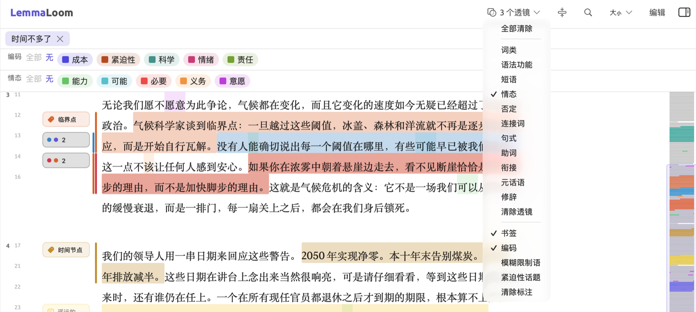
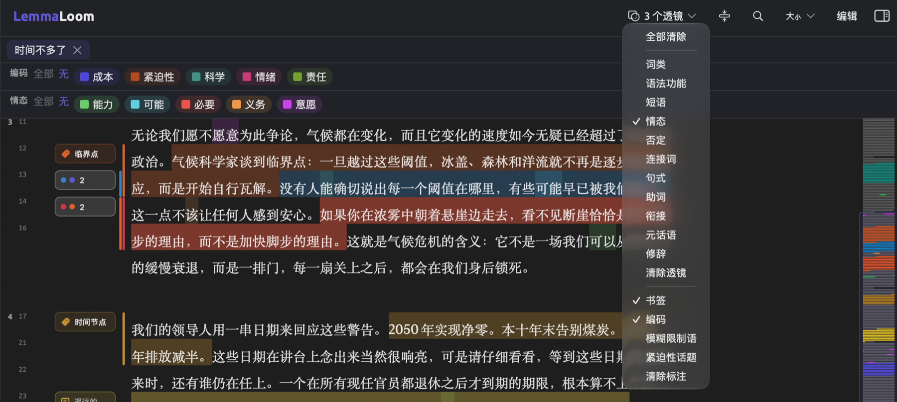
菜单最多分为三组，以分隔线隔开：
| 组 | 内容 |
|---|---|
| 内置透镜 | 该文档语言可用的内置透镜，顺序与本章后文内置透镜一节表格中的顺序相同，后面是清除透镜 |
| 分析器 | 你自己编写的、适用于该文档语言的分析器，后面是清除分析器。至少有一个这样的分析器时，才会出现这一组。 |
| 标注 | 先是书签和编码，然后是按名称排序的项目词典，再是查询透镜，然后是自动编码…各项，最后是清除标注 |
全部清除位于这几组之上。
启用或停用透镜：
- 在阅读器中打开文档。
- 点按标题栏中的透镜菜单。
- 选取一个透镜。菜单中它的旁边会出现勾号，大多数透镜还会在文本上方显示图例。
- 要再添加一个透镜，请再次打开菜单并选取它。每次选取之后，菜单都会关闭。
- 要停用一个透镜，请再次选取它。
下面四个清除项可以一次停用多个透镜：
| 菜单项 | 停用的透镜 |
|---|---|
| 全部清除 | 所有透镜，包括编码和书签 |
| 清除透镜 | 第一组中的内置透镜，以及所有查询透镜 |
| 清除分析器 | 所有分析器透镜 |
| 清除标注 | 编码、书签、词典透镜和查询透镜 |
如果某一项不可用，说明它要停用的透镜一个也没有启用。想去掉内置透镜的颜色、同时保留编码实例继续阅读时，请选取清除透镜。
菜单中的自动编码…项为词典透镜、查询透镜或分析器透镜标注的段落编码（见第 7 章“编码”中的从透镜自动编码）。只有至少启用了一个这样的透镜，这一项才会出现。启用了多个这样的透镜时，每个透镜各有一项，例如使用模糊限制语自动编码…。
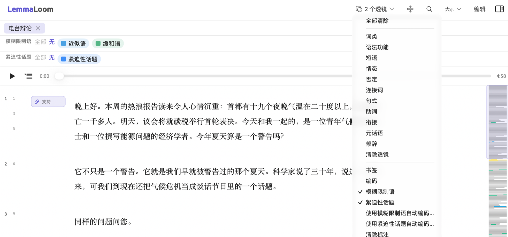
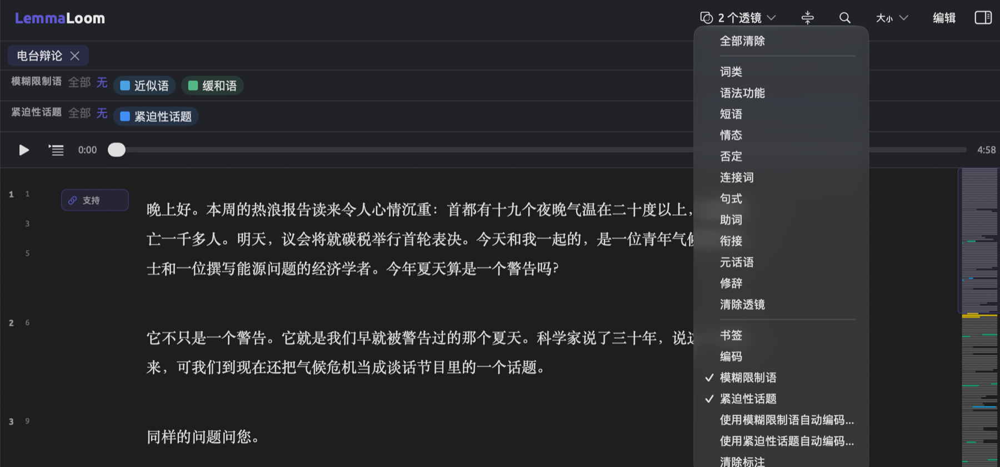
在全屏幕模式下，标题栏会隐藏，透镜菜单移到屏幕最上方的工具栏中。那里的菜单项相同，本章后文介绍的折叠按钮在那里变为折叠至匹配项，当前文档处于折叠状态时则显示为展开文档。索引建立完成之前，菜单不可用，它的悬停提示为尚未索引（见第 5 章“阅读与编辑”中的全屏幕阅读器）。
并排查看两个文档时，标题栏中的工具作用于当前窗格。要切换窗格，请在另一个文档窗格中点按一下。
解读透镜
启用大多数透镜后，它们的图例会立即出现在文本上方。图例先显示透镜的名称，后面是它的各个标注项，每个标注项显示为一个带有该标注项颜色的图例项。点按一个图例项会停用透镜的这个标注项，再点按一次则重新启用，它在文档中的标注随之隐藏或重新出现。停用的图例项显示为淡色。多个图例按透镜启用的先后顺序排列。
大多数图例项带有一个标注项颜色的小方块。不过，如果透镜默认以下划线显示某个标注项，例如衔接中的句末新信息（重音），它的图例项显示的就是一小段彩色横条。
选择启用哪些标注项
启用透镜时，它的所有标注项都会启用。如果你的问题只涉及其中一两种颜色，通常就要缩小透镜的范围，只显示这几种颜色。例如，你也许只想研究动词，或者只想看作者在哪里表达义务。
- 无停用所有标注项，全部启用所有标注项。所有标注项都已启用时，全部不可用；没有任何标注项启用时，无不可用。
- 右键点按图例项，会打开快捷菜单。仅启用此项只启用这一个标注项。停用或启用切换这个标注项的状态，全部启用则重新启用所有标注项。
停用的标注项所对应的词会变淡。其他透镜所做的标注会盖过停用标注项造成的变淡效果。
下图显示“时间不多了”的情态图例，义务图例项的快捷菜单已经打开。选取仅启用此项，就只显示表示义务的词，例如“这一点不该让任何人感到安心”中的该。


只保留透镜的某一个标注项：
- 启用这个透镜。
- 在图例中右键点按这个标注项的图例项，然后选取仅启用此项。
- 要重新启用所有标注项，请点按全部。
把文档折叠为有标注的句子时，只会保留被某个已启用标注项标注的句子（详见本章后文的只显示有标注的句子）。自动编码对话框中只有已启用的标注项才有对应的行，所以自动编码时会略过所有停用的标注项。
你还可以从检查器的语法标签页启用三个透镜。在它的语篇分面中，展开衔接、元话语或修辞下的某个类别，然后点按在正文中高亮。LemmaLoom 会在需要时启用相应的透镜，并让它只显示所选类别的内容。再点按一次这个链接，所有标注项就会恢复正常显示（见第 11 章“语法检查器”中的在正文中高亮某个类别）。
组合透镜
两个透镜以相同的样式标注同一个词时，两种颜色会同时显示。高亮变为渐变色，上部是第一个透镜的颜色，下部是第二个透镜的颜色。下划线同样变为渐变色，左端是第一种颜色，右端是第二种颜色。文本颜色也是渐变的，每个字从上部的第一种颜色过渡到下部的第二种颜色。
组合透镜时，最好让一个透镜用高亮、另一个用下划线，这样最容易辨认。词类和语法功能默认使用下划线样式，其他大多数透镜则高亮词语。所以，情态宜与词类搭配，而不宜与短语搭配，因为短语会高亮文档中的大多数词，遮住其他透镜的高亮。此外，有四个透镜的标注样式可以在设置中更改，为第三个透镜腾出位置（见本章后文的透镜的颜色与样式）。
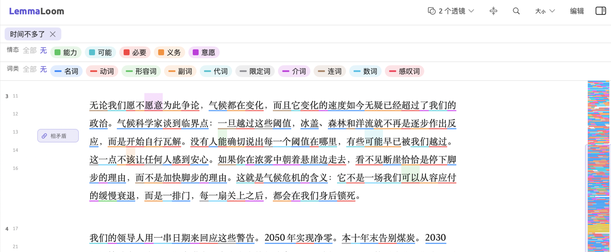
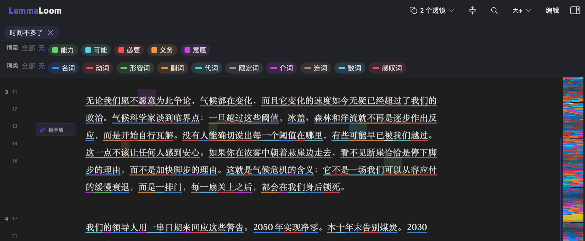
文档概览是阅读器右边缘的竖直窄条，它会显示已启用透镜的颜色。处理很长的文档时，这一点很有用，因为从文档概览可以很快找到标注集中的地方，在文档概览中点按就能在文档中跳转（见第 5 章“阅读与编辑”中的文档概览）。
只显示有标注的句子
透镜还可以把文档折叠为它所标注的句子。这样，你就能连续阅读所有谈到要求的句子，或者所有已编码的段落。文档很长时，或者在编码之前比较许多相似的句子时，折叠尤其有用。
折叠文档要用折叠按钮。它紧挨在透镜菜单右侧，只显示一个图标（两个箭头夹着一个矩形），文档折叠时图标会着色。启用了任何内置透镜、词典透镜、查询透镜或分析器透镜时，或者启用了编码或书签且文档中有编码实例或书签时，这个按钮就会出现。
文档折叠期间，只要有一个当前已启用的透镜标注了某个句子，这个句子就会保留。也就是说，对于内置透镜、词典透镜、查询透镜或分析器透镜，句子中要有一个或几个词带有某个已启用的标注项；对于编码和书签，则要分别有编码实例或书签与句子重叠。
两个保留的句子之间如果有省略的句子，会用一行三个隔开的圆点表示。第一个保留的句子之前和最后一个之后的句子直接省略，不显示圆点。
在下面的示例中，“时间不多了”只启用了情态透镜，并且除必要以外的所有标注项都已停用。折叠之后只剩下三个句子，两句含有必须，一句含有需要。然而后者“我们不需要再来一份报告”否定了一种必要，而不是提出必要。
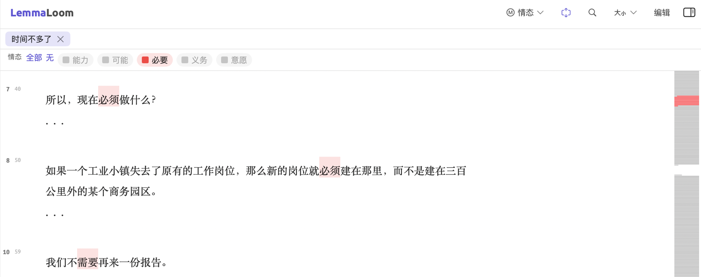
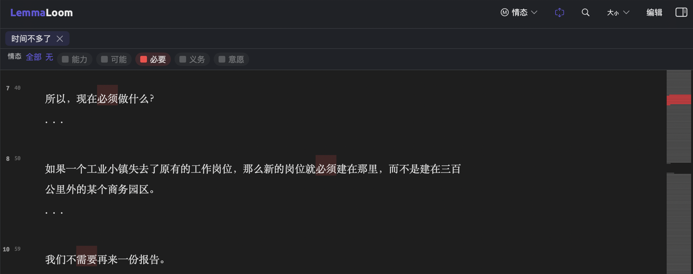
让透镜只显示有标注的句子：
- 启用透镜，并在它的图例中停用你不需要的标注项。
- 如果不想同时保留已编码和加了书签的句子，请停用编码和书签。清除标注会停用这两者，同时让内置透镜保持启用，不过它也会停用词典透镜和查询透镜。
- 点按折叠按钮。
- 要重新阅读整个文档，请再次点按折叠按钮。这时它的悬停提示为重新显示整个文档。
文档折叠期间，对透镜和标注项所做的更改会立即反映在文档中。如果一个句子也不剩，就会显示整个文档。开始编辑或打开查找（⌘F）也会显示整个文档。
在折叠的文档中添加的编码实例、书签和备忘录，都会保留在完整文本中的相应位置。
内置透镜
内置透镜呈现对文档语法的分析，包括文档中的词、这些词的词类和形态、词与词之间的关系，以及由这些词组成的短语。语法分析中的错误也会出现在透镜中。对于经过编辑的书面文字，分析大多准确；口语中常有重复、打断和不完整的句子，分析的准确度就低一些。建议先用透镜找出可能相关的段落，并在断言某种现象出现的频率之前抽查其中一部分。
有些透镜依据简短的词表而不是语法，包括情态、连接词和元话语。词表中的词只要以相应的词类出现，这些透镜就会标注它，不管它在上下文中是什么意思。
LemmaLoom 中有哪些内置透镜可用，取决于所分析文档的语言：
| 透镜 | 英语 | 德语 | 中文 |
|---|---|---|---|
| 词类 | 有 | 有 | 有 |
| 语法功能 | 有 | 有 | 有 |
| 短语 | 有 | 有 | 有 |
| 形态学 | 有 | 有 | 无 |
| 情态 | 有 | 有 | 有 |
| 否定 | 有 | 有 | 有 |
| 连接词 | 有 | 有 | 有 |
| 句场 | 无 | 有 | 无 |
| 句式 | 无 | 无 | 有 |
| 助词 | 无 | 无 | 有 |
| 衔接 | 有 | 有 | 有 |
| 元话语 | 有 | 有 | 有 |
| 修辞 | 有 | 有 | 有 |
衔接、元话语和修辞都来自建立索引时由分析器完成的分析。在文档信息的索引部分可以看到哪些分析器处理过你的文档（在导航栏中右键点按文档，然后选取信息）。如果你在那里移除了其中某个分析器的输出，对应的透镜就会从这个文档的透镜菜单中消失；点按运行即可恢复（见第 21 章“分析与索引”中的移除分析器的输出）。
词类
词类按词性为文档中的每个词加下划线。图例有十个图例项：名词、动词、形容词、副词、代词、限定词、介词、连词、数词和感叹词。这个透镜让你看出一篇文本偏重哪些词类，从而很快了解文本的结构；例如，官方报告往往大量使用名词。只保留形容词这一个标注项，就能直观地看到作者用哪些形容词来作出评价。
用词类透镜分析 The fuel tax rarely spares a rural family（燃油税很少放过农村家庭）时，fuel、tax 和 family 作为名词加下划线，spares 作为动词，rarely 作为副词，rural 作为形容词，The 和 a 作为限定词。
下图显示启用了词类的“时间不多了”的开头，即一个炎热夜晚的故事。
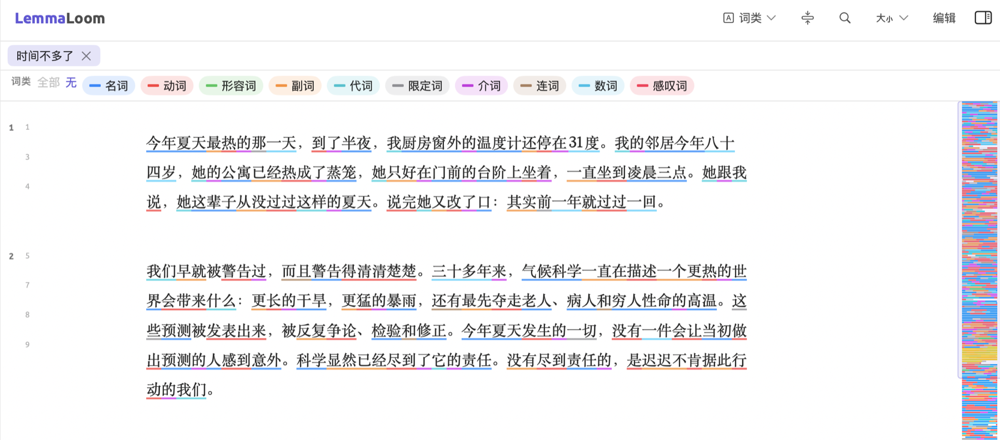
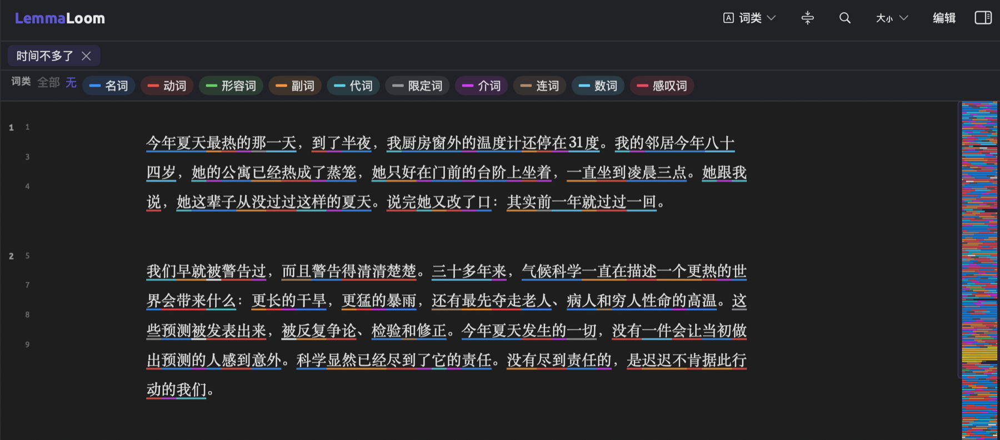
这些词类都很宽泛，其中几类包含的词超出了名称字面上的范围：
- 动词包括助动词和情态动词，如 have、be、can 和 should。
- 在英语中，代词包括 my 和 their 这样的物主代词，以及 there is 中的 there。德语的物主代词，如 mein 和 ihr，归入限定词。
- 小品词都归入介词类，包括英语 to work 中的 to、pick up 中的 up 和表示所属的 's，德语的 zu 和 nicht，以及中文里的的和了。
- 在英语中，介词还包括 because、if 和 that（如 I think that 中的 that）这样的从属连词。英语分析把它们标为介词，在德语和中文中它们则归入连词。
不属于这十类的词，例如外来词，加灰色下划线。
语法功能
语法功能按每个词在句子结构中的作用为它加下划线。这个透镜显示文本中是谁或什么在发出动作，例如气候是动词的主语（如气候都在变化），还是动词的宾语（如保护孩子们将要继承的气候）。
在句子结构中，主要动词以外的每个词都连到另一个词上，即它的中心词。例如在 a rural family 中，rural 连到 family。每个词按它与自己的中心词之间的关系着色。因此在一个短语中，中心词显示整个短语的功能，修饰它的词则着色为定语或状语。
在 The fuel tax rarely spares a rural family 中：
- tax 标为主语，The 和 fuel 着色为定语；
- rarely 着色为状语；
- family 标为宾语，a 和 rural 都着色为定语；
- 主要动词 spares 不着色。
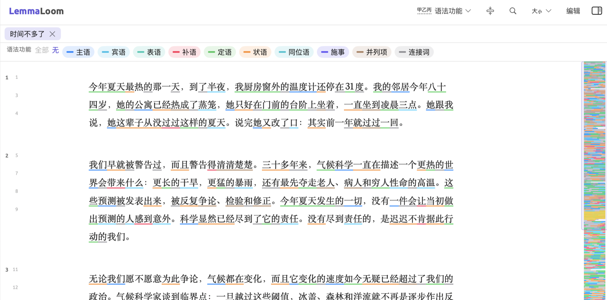
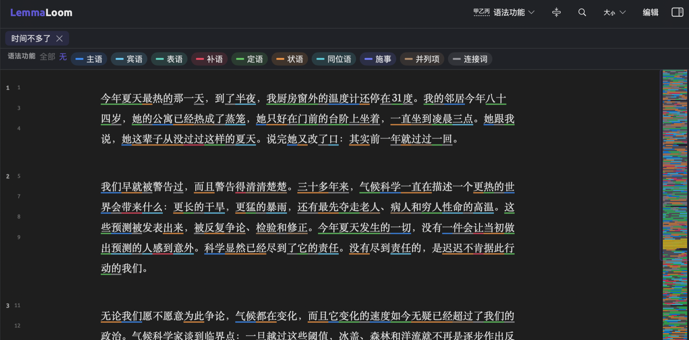
图例有十个图例项：
| 标注项 | 标注的内容 | 示例 |
|---|---|---|
| 主语 | 动词的主语，包括用作形式主语的 it 和 there | two students fainted 中的 students |
| 宾语 | 动词或介词的宾语 | signed more petitions 中的 petitions；on a road 中的 road |
| 表语 | 补足 be、seem 等系动词的词 | floods are expensive 中的 expensive |
| 补语 | 补足另一个动词的小句中的动词 | the country has to share the bill 中的 share |
| 定语 | 修饰名词的词，如冠词、形容词、物主词、数词、用作修饰语的名词，以及附着于名词的介词 | a rural family 中的 rural；the end of the decade 中的 of |
| 状语 | 修饰动词、形容词或副词的词，包括附着于动词的介词、状语从句和 not | rarely；voted after midnight 中的 after |
| 同位语 | 换一种说法指称旁边那个名词短语的名词短语 | one of my regulars, a retired mail carrier 中的 carrier |
| 施事 | 引出被动动词动作发出者的 by | filtered by fear 中的 by |
| 并列项 | 并列结构中的第二个及以后的成员 | activists and skeptics 中的 skeptics |
| 连接词 | 起连接作用的小词，如连词、从属连词、助动词和小品词 | and；because；have warned 中的 have |
德语和中文各有单独的分析，使用自己的一套关系。LemmaLoom 把两者都归入同样的十种功能，所以在每种语言中，颜色代表的作用大致相同。不过，德语分析把被动结构中的 von 短语标为被动主语，因此在 von der Regierung beschlossen（由政府决定）中，von 着色为主语。如果一个词不对应十种功能中的任何一种，例如句子的主要动词，就不着色。
短语
短语为每个词加高亮，颜色取决于包含这个词的最小短语。“2024 热浪报告”这类公文中的名词短语通常很长，所以很容易看出来，你可以拿它们与演讲中的名词短语对比。
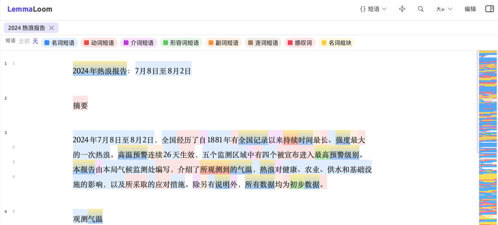
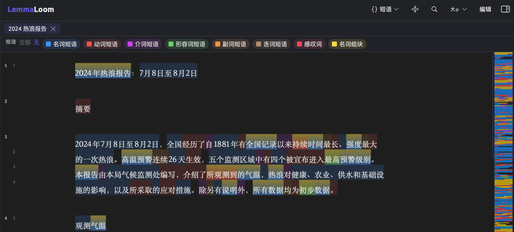
图例中每种短语各有一个图例项，即名词短语、动词短语、介词短语、形容词短语、副词短语、连词短语（as well as、rather than）和感叹词。最小短语属于其他类型的词（例如 pick up 中的 up）加灰色高亮。
另一个标注项名词组块把名词短语的核心作为一个整体标注出来，也就是作主语或宾语的名词或代词，加上它前面属于同一个名词短语的词。例如，在 We wrote to the city council after the flood（洪水过后，我们给市议会写了信）中，三个名词组块是 We、the city council 和 the flood。因此，名词组块中的词带有两种高亮，二者相互渐变（见本章前文的组合透镜）。要单独查看短语，可以在图例中停用名词组块；要查看组块，则只保留名词组块。
形态学
形态学按每个词的某一项语法特征为它着色。这些特征包括时态、数、级、动词形式，在德语中还有格、语气和性。每个图例项先写出一项特征，再写出这项特征的一个取值，例如时态：过去时或数：复数。启用这个透镜后，你可以追踪时态的变化，例如英文译本“时间不多了 (英语)”怎样从讲述一个炎热夜晚的故事转入现在时。这种转换常常标志着文本从轶事转向论证。
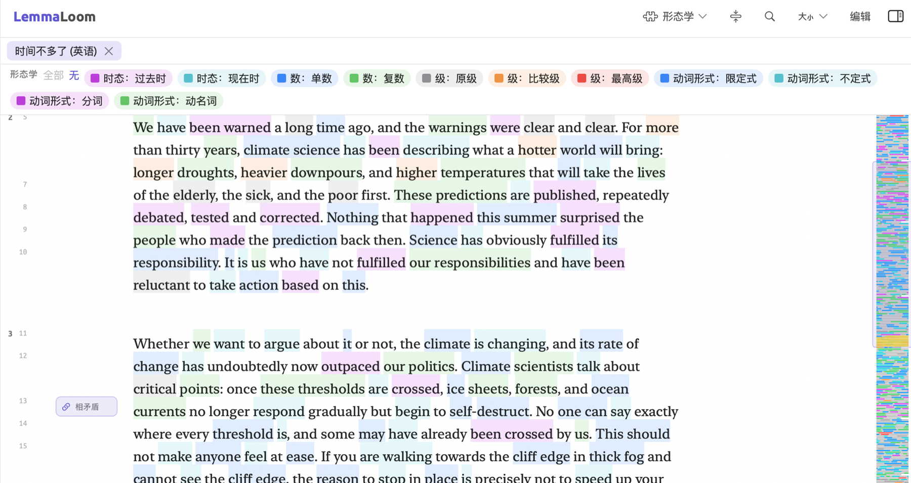
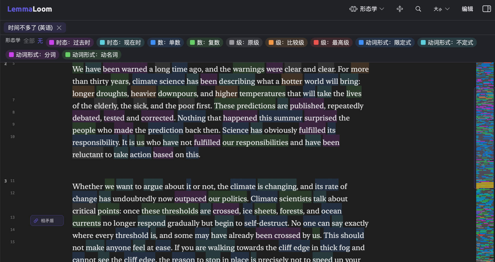
一个词可以同时表达几项特征。例如，德语名词 Aktivistinnen（女活动人士们）就表达了格、数和性。启用这个透镜后，每个词只显示下表中它所具有的第一项特征：
| 语言 | 顺序 |
|---|---|
| 英语 | 时态、数、级、动词形式 |
| 德语 | 格、语气、时态、动词形式、级、数、性 |
在英语中，动词通常显示时态，名词和代词显示数，形容词显示级（原级 hot、比较级 hotter、最高级 hottest）。过去分词，如 has warmed 中的 warmed，标为时态：过去时，因为时态优先。原形，如 to act 中的 act，标为动词形式：不定式。
在 LemmaLoom 中，有时两个标注项共用一种颜色。例如在英语中，时态：现在时和动词形式：不定式都是蓝绿色，所以 acts 和 to act 看起来一样；在德语中，格：属格与时态：过去时同为紫色。如果需要区分它们，请在设置中更改其中一个标注项的颜色。本章后文的透镜的颜色与样式一节会进一步介绍如何自定义透镜的颜色和样式。
在德语中，名词、冠词、形容词和代词显示它们的格。动词处于语气：虚拟式或语气：祈使式时，显示语气；其他限定式动词显示时态；不定式和分词显示动词形式（动词形式：不定式、动词形式：分词）。因此在德语中，启用全部标注项时，数和性只出现在没有格的词上。
情态
情态透镜高亮文本中表达可能、必要和意愿的词。借助它，你可以看出一篇文档的确定程度。例如，你可以比较活动人士和怀疑论者的文章说某件事必须发生的频率，以及说它可能发生的频率。情态依据词表工作，按词典形式匹配。词表中的每个词只在用作动词、助动词或副词时才会被标注（在英语中，able 用作形容词时也会被标注）。
| 标注项 | 英语 | 德语 | 中文 |
|---|---|---|---|
| 能力 | can, could, able | können | 能、会、可以、能够 |
| 可能 | may, might, perhaps, maybe, possibly | mögen, dürfen, vielleicht, möglicherweise, eventuell | 可能、也许、或许、大概、恐怕、兴许 |
| 必要 | must, need | müssen | 必须、需要、务必、必得 |
| 义务 | should, ought, shall | sollen | 应该、应当、该、理应 |
| 意愿 | will, would, want, wish, intend | wollen, möchten | 要、想、愿意、打算、希望 |
| 虚拟式 | 其他任何处于虚拟式的动词，如 hätte 或 wäre |
虚拟式是德语独有的标注项。德语情态动词处于虚拟式时，例如 könnte，仍保留它所属情态动词的标注项，这里是能力。
词表匹配时不考虑词义。在“时间不多了”的“当然要花钱”一句中，要表示需要，却带有意愿标注项。
否定
否定把否定词高亮为否定词，并把它们在句中作用的范围加下划线，标为否定辖域。这个透镜能找出否认的说法，以及作者驳斥某种立场的地方，例如“时间不多了”中的“这些都算不上激进”。
在英语中，否定词有 not、n't、never、no、nobody、nothing、none、neither、nor 和 nowhere，以及英语分析标为否定的其他任何词。德语的否定词包括 nicht、kein、nie、niemals、niemand、nichts、weder 和 noch。不过，noch 无论是什么意思都会被标注，所以 wir haben noch Zeit（我们还有时间）中的 noch 也会被标注。中文的否定词包括不、没、没有、别、无和未等。
否定辖域是否定词所附着的那个词，加上在语法上依附于它的所有词。如果否定词修饰主要动词（not 的大多数用法都是如此），辖域就几乎是整个小句。“时间不多了 (英语)”中的 We don't need another report（我们不需要再来一份报告）就是这样，n't 作为否定词高亮，其余每个词，包括 We 和 do，都作为辖域加下划线。在 No minister wanted the carbon tax（没有哪位部长想要碳税）中，No 附着于 minister，所以只有 minister 加下划线。
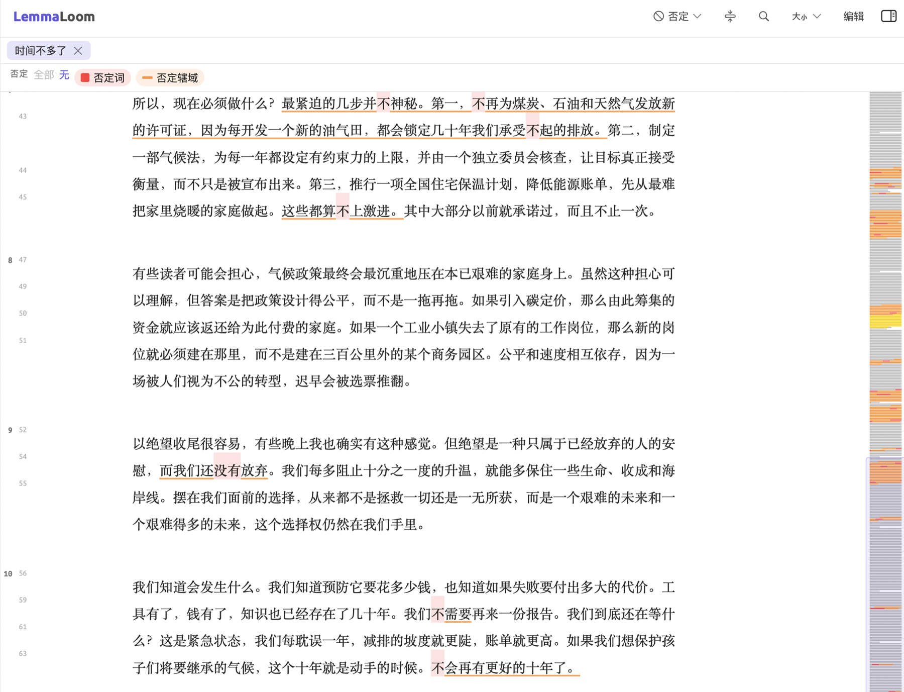
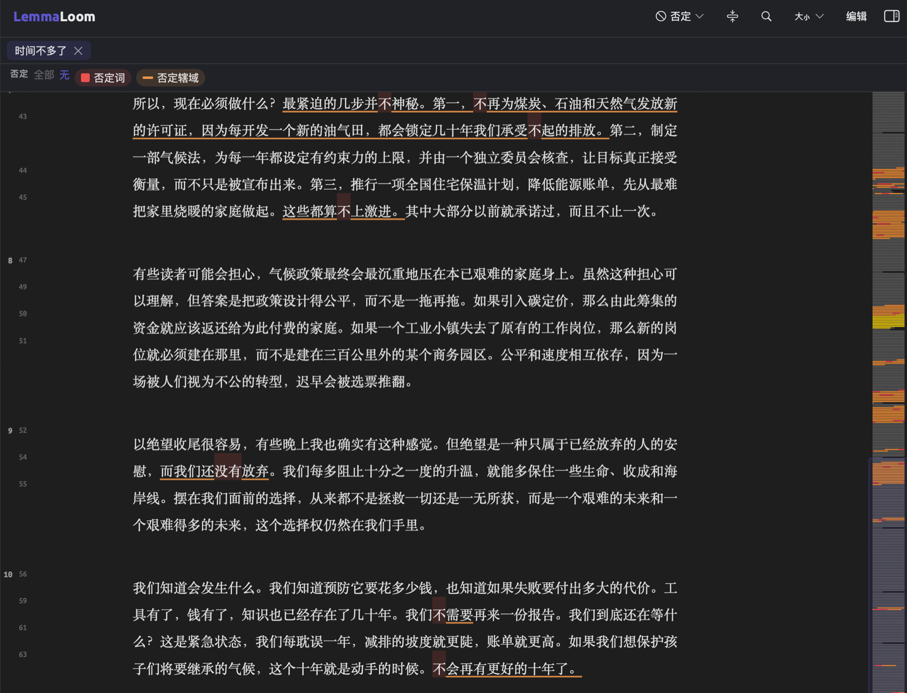
连接词
连接词按连接性词语的意义为它们分类，例如因果（because）或转折（but）。借助这个透镜，你可以理清文档的逻辑，例如哪里给出了理由，哪里作出了让步。连接词依据词表工作，只找出用作连词或副词的连接性词语。
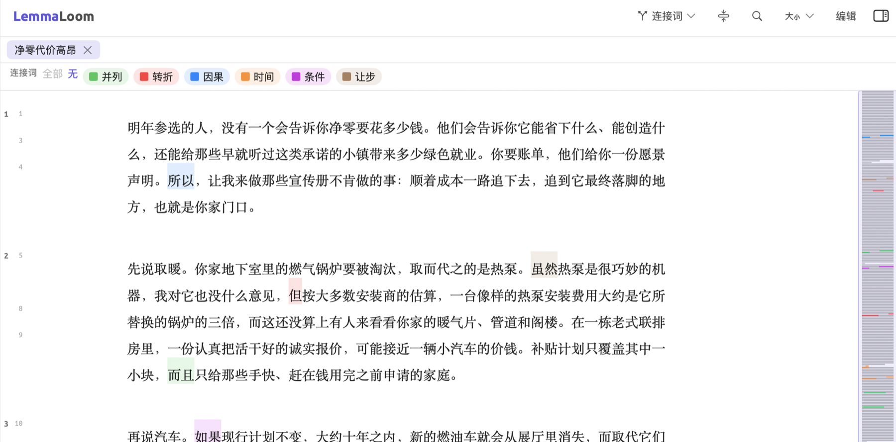
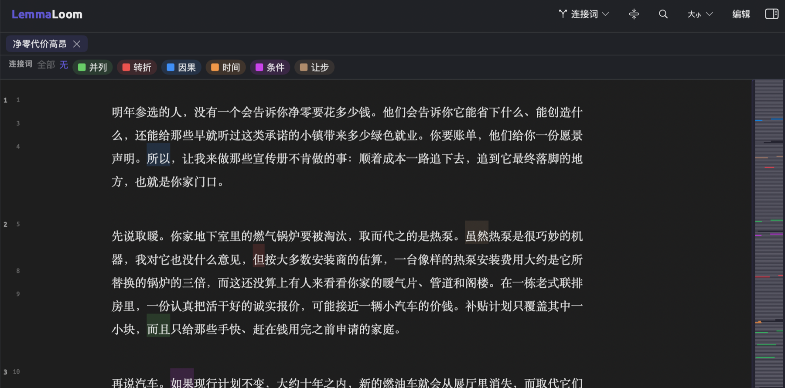
| 标注项 | 英语 | 德语 | 中文 |
|---|---|---|---|
| 并列 | and, also, moreover, furthermore, besides, likewise, similarly | und, auch, außerdem, zudem, ferner | 而且、并且、此外、另外、以及 |
| 转折 | but, however, yet, nevertheless, instead, whereas, rather | aber, jedoch, allerdings, hingegen, sondern | 但是、但、然而、不过、可是、却 |
| 因果 | because, therefore, thus, hence, consequently, since, so | weil, denn, daher, deshalb, folglich, da, also | 因为、由于、所以、因此、于是 |
| 时间 | then, meanwhile, afterwards, before, after, finally, next, when, while | dann, danach, bevor, nachdem, schließlich, während, als | 然后、接着、随后、之后、最后、首先 |
| 条件 | if, unless, otherwise, provided | wenn, falls, sofern, sonst | 如果、要是、假如、只要、除非、否则 |
| 让步 | although, though, albeit | obwohl, obgleich, dennoch, trotzdem | 虽然、尽管、即使、哪怕 |
表中只列出了一部分，大多数标注项的词表还要长一些。在演讲和辩论中，并列几乎会标注每一个 and；如果它挤占了其他标注项，建议把它停用。
before the money runs out（在钱用完之前）中的 before 连接两个小句，所以带有时间标注项；before an election（在选举之前）中的 before 用作介词，所以不带。只要用作连词或副词，表中的每个词无论表示什么意思都保留自己的标注项。so hot（这么热）中的 so 即使与原因无关，也算作因果；since 即使在 since the flood reached her street（自从洪水漫到她家那条街）中也仍是因果；while 即使表示 whereas（而），也仍是时间。此外，德语的 da（表示“那里”，在口语中很常见）无论意思如何，都算作因果。
元话语透镜有自己的连接语标注项。无论表达哪种关系，它只标注说话人用来引导听者的连接性副词，例如 however 和 therefore（见本章后文的元话语）。
句场（德语）
句场按照德语语法所用的场模型显示德语句子的词序。限定动词，也就是随句子主语变位的动词，构成左句框。分词、不定式和动词的可分前缀通常出现在小句末尾，构成右句框。左句框之前的所有成分构成前场，两个句框之间的成分构成中场，右句框之后的一切属于后场。如果一项研究要分析德语作者用什么成分作为句子的开头，这个透镜就很有用，因为前场通常容纳话题或作者强调的信息。
下面这个例句包含全部五个场：
Meine Nachbarin hat gestern bis drei Uhr draußen gesessen, weil ihre Wohnung unerträglich heiß war.（我的邻居昨天在外面一直坐到三点，因为她的公寓热得让人受不了。）
| 场 | 词 |
|---|---|
| 前场 | Meine Nachbarin |
| 左句框 | hat |
| 中场 | gestern bis drei Uhr draußen |
| 右句框 | gesessen |
| 后场 | weil ihre Wohnung unerträglich heiß war |
如果句子没有右句框，例如 Wir streiken heute vor dem Rathaus（我们今天在市政厅前罢课），限定动词之后的全部内容都属于中场。可分前缀充当右句框，例如 Der Streik fängt um acht an（罢课八点开始）中的 an。
透镜把每个句子都当作单个小句，并把第一个出现的限定动词当作左句框。如果句子以从句开头，例如 Weil es so heiß war, bin ich nach Hause gegangen（因为天太热，我就回家了），句场就会划分错误：第一个限定动词是 war，所以 war 成为左句框，主句动词 bin 则落入中场。右句框的确定方法相同，由最后一个分词、不定式或可分前缀构成；在 Wir haben versucht, die Abgeordneten zu überzeugen（我们试过说服议员们）中，右句框是 überzeugen，versucht 属于中场，句子也就没有后场。没有限定动词的句子，LemmaLoom 不着色。标点符号也不着色。
下图显示德语评论文章“Uns läuft die Zeit davon”的一部分，它是德语版示例项目中与“时间不多了”相对应的文章。第一句以 Um Mitternacht, am heißesten Tag dieses Sommers, zeigte 开头，所以 Um Mitternacht, am heißesten Tag dieses Sommers 是前场，zeigte 是左句框。这个句子没有右句框，zeigte 之后的部分都属于中场。
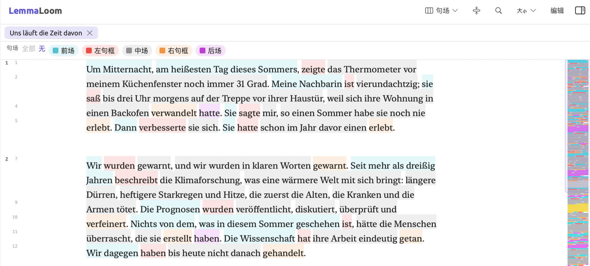
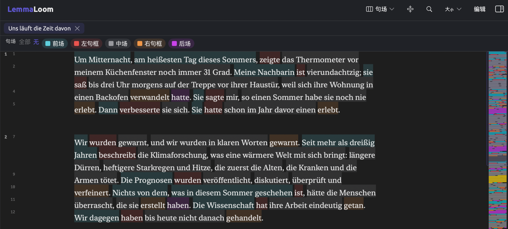
句式与助词（中文）
有两个透镜只用于分析中文文档。如果你的研究关注事件是怎样呈现的，例如把字句中施事者怎样对某个对象施加动作，或者被字句中某人怎样承受某个动作，这两个透镜可以帮助你更好地理解文本。
句式高亮四种句式中的典型标志词：
| 标注项 | 标注的内容 | 示例 |
|---|---|---|
| 把字句 | 把，它把宾语提到动词之前 | 他们把太阳能板装在屋顶上。 |
| 被字句 | 被以及分析能识别的其他被动标记 | 铁轨被高温晒弯了。 |
| 是…的句 | 框住一个句子的是和句末的的 | 我是去年开始参加罢课的。 |
| 存现句 | 用作动词的有（以及没有） | 广场上有两百个学生。 |
分析给表示领有的有（如“我有时间”）和存现的有打上同样的标记，所以句式也会标注前者。
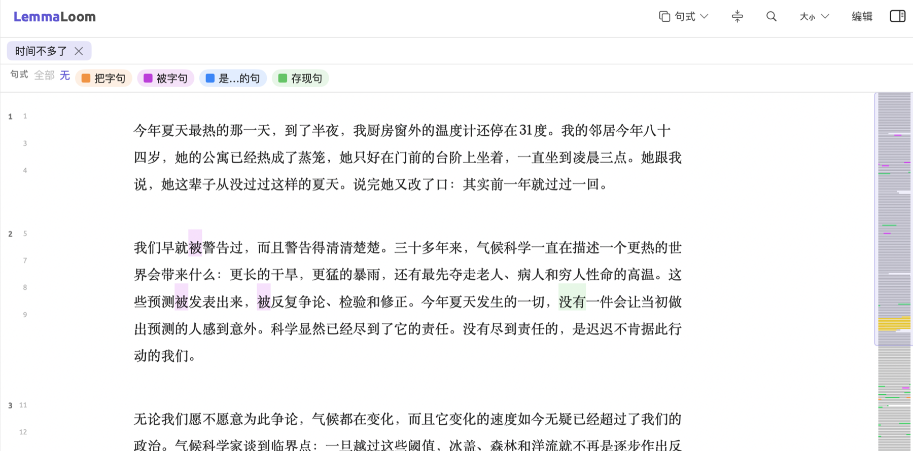
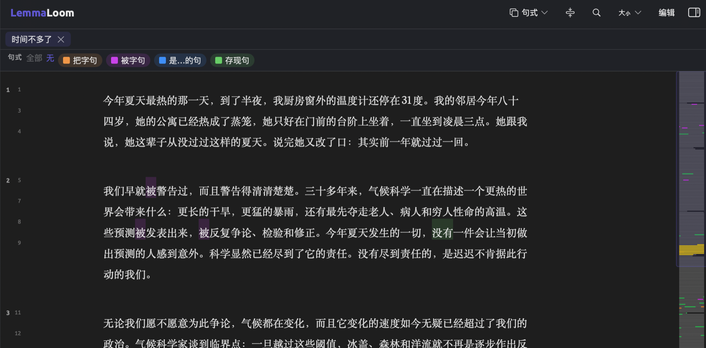
助词高亮语法助词和量词：
| 标注项 | 标注的内容 | 示例 |
|---|---|---|
| 了（完成体） | 动词后作完成体助词的了 | 我们签了请愿书 |
| 着（持续体） | 动词后的着 | 她举着牌子 |
| 过（经历体） | 动词后的过 | 我去过那个农场 |
| 的（定语） | 把修饰语与名词连起来的的 | 我的女儿；种大麦的农民 |
| 地（状语） | 把修饰语与动词连起来的地 | 慢慢地走 |
| 得（补语） | 引出程度补语或结果补语的得 | 涨得很快 |
| 量词 | 表示计量单位的词 | 两百个学生中的个 |
分析把句末的了当作语气助词，所以它不在此列。元话语透镜把它标为语气助词。
衔接
衔接显示每个句子怎样与文档前文所说的内容相连。它基于这样一个前提：每个句子通常以前文已经确立的内容（主位）开头，以新信息结尾。按照篇章语言学的观点，如果每个主位都与前面的某个句子相连，文本就更容易理解。
透镜找出每个句子的主位，并按主位与前面句子的关系为它加高亮。在英语中，主位是句子主要动词的完整主语短语。在德语中，主位是前场；没有前场时，则是完整的主语短语。在中文中，主位是话题；分析找不到话题时，则是完整的主语短语。
| 标注项 | 使用场合 |
|---|---|
| 开头 | 文档的第一个句子，前面没有可以相连的内容 |
| 代词衔接 | 主位中含有第三人称代词，如 she、it 或 they |
| 领属衔接 | 主位中含有第三人称物主词，如 his、its 或 their。Her 算作代词衔接，因为代词检验在前。 |
| 指示衔接 | 主位中含有 this、that、these、those 或 such |
| 重复词语 | 主位中的某个名词、代词、数词或形容词，与前两个句子之一中某个名词、代词、数词、动词或形容词的词典形式相同 |
| 零形回指 | 仅限中文。主要动词没有主语，所以这个句子延续前一句的话题（回指即指向前文已经提到的事物）。这个图例项出现在每个文档的图例中。 |
| 新话题 | 以上都不是。主位引入了新的内容，或者句子根本没有主位。 |
各项检验按上表的顺序进行，第一个成立的检验决定句子得到哪个标注项。代词衔接和重复词语都显示为绿色，在语篇分面的衔接部分可以把它们区分开。
没有主语的句子，例如祈使句，或 Net zero by 2050.（2050 年实现净零。）这样的片段句，都没有主位，因此归入新话题（在中文中通常是零形回指），只有句末加下划线。
此外，每个句子的句末新信息（重音）都会加下划线。它是包含句子最后一个词的最小短语；如果这个短语超过六个词，则只是最后一个词。
请看下面的例子：
- Our village had four buses a day.（我们村一天有四班公交车。）（开头）
- They ran to the market town and back.（它们往返于村子和集镇之间。）（代词衔接）
- Their timetable was cut twice in two years.（它们的班次两年里被削减了两次。）（领属衔接）
- The town now pays for an electric minibus.（镇上现在出钱运营一辆电动小巴。）（重复词语，因为 town 重复了第 2 句中的词）
- Fuel prices keep climbing.（燃油价格不断上涨。）（新话题）
一连串的新话题句子可能表示听者或读者得在没有提示的情况下自己把前后句联系起来，不过透镜对衔接的衡量相当粗略。它只凭形式识别代词。衔接只算相同词语的重复，所以按这个标准，village（村子）和 town（镇子）这样意思相关的词都算作新词。代词也算作重复。连续多个句子都以代词我们开头时，例如在“来自气候罢课的信”中，许多主位都会归入重复词语。
在下图中，新闻报道“碳税之争”逐一介绍各个群体的看法。按照这个标准，引出新群体的句子中，介绍执政党后座议员的那一句和以“一些人”开头的那一句，主位是新话题。“朝野双方的农村议员”和“另一些人”同样引出新群体，但“农村”和“一些”在前文出现过，所以算作重复词语。后座议员的引语中含有代词“他们”，透镜把这里算作代词衔接。
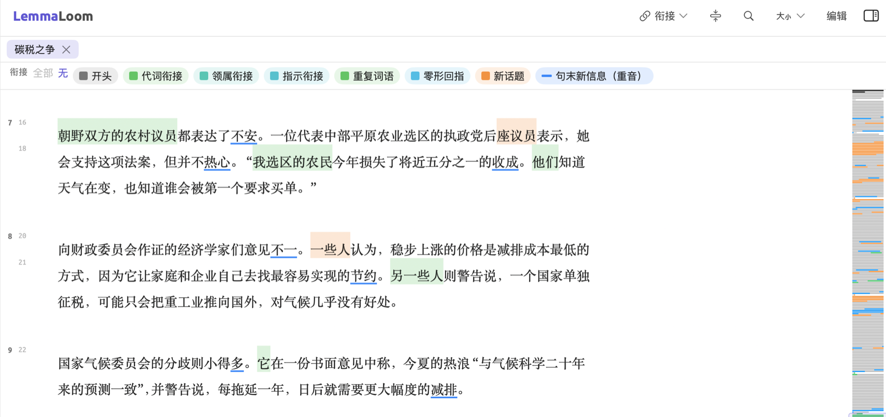
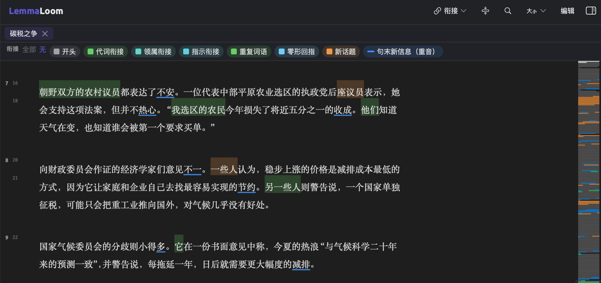
检查器语法标签页中语篇分面的衔接部分，逐句列出文档中的衔接关系（没有主位的句子也包括在内；见第 11 章“语法检查器”中的衔接）。
元话语
说话人可以用许多词来评论自己所说的话，或直接对听者说话，例如 perhaps（也许）、obviously（显然）和 you（你）。元话语透镜可以高亮所有这些词，让你从弱化、强化和称呼听者这几方面考察作者的立场。这个透镜依据词表，并检查每个词的词类。
| 标注项 | 标注的内容 | 英文示例 |
|---|---|---|
| 模糊限制语 | 缓和一个说法 | perhaps, probably, roughly, may, might, could, seem, suggest, often, usually |
| 增强语 | 排除疑问 | clearly, obviously, certainly, indeed, always, never, demonstrate |
| 态度标记 | 表明说话人对所说内容的感受 | fortunately, unfortunately, surprisingly, sadly, hopefully |
| 连接语 | 在观点之间起引导作用 | however, therefore, thus, nevertheless, meanwhile, instead；句首的 also、so、then 和 finally |
| 介入 | 称呼听者，或把听者包括进来 | you, your, we, us, our, let；consider、imagine、note 等祈使形式 |
| 情态小品词 | 仅限德语。针对听者调节句子语气的小品词。 | ja, doch, eben, halt, mal, schon |
| 语气助词 | 仅限中文。句末的助词。 | 吗、呢、吧、啊 |
德语和中文有各自的词表。在德语中，用作敬称您的 Sie 不在句首时算作介入。
在公开演讲和公开信中，作者经常使用我们和你们这样的代词，介入的标注会非常多，以致淹没其他标注。必要时，可以在图例中停用介入，以便看清其他标注项。
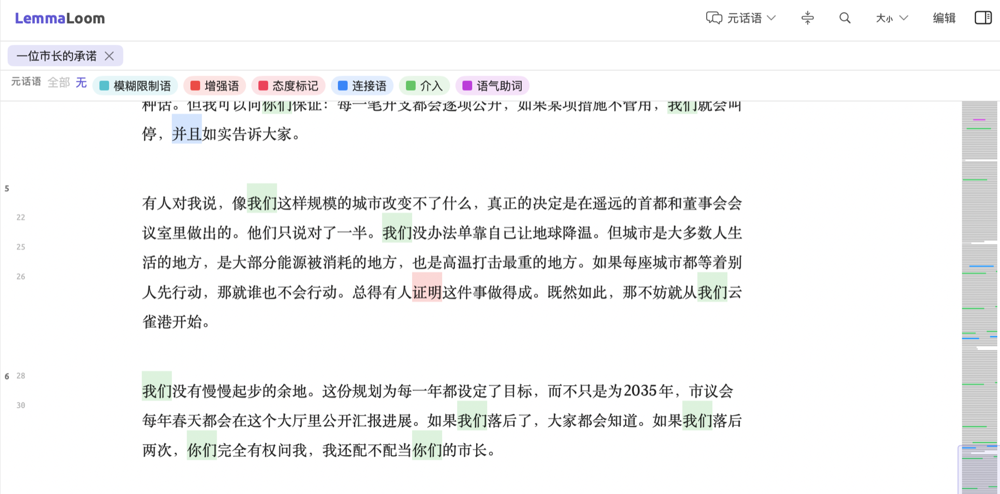
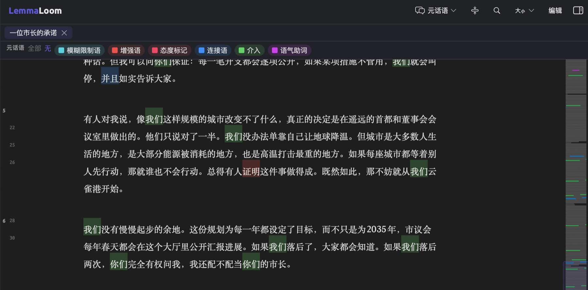
修辞
修辞突出显示作者有意使用的修辞手法，例如被动语态和排比。修辞用于事先写好的文本最有效，例如评论文章和题为“一位市长的承诺”的演讲，可以帮助你分析双方的说服性文本各是怎样构建的。大多数手法以高亮显示，名词化、力量词和首语重复则加下划线。被动语态和关联词对都是紫色高亮。
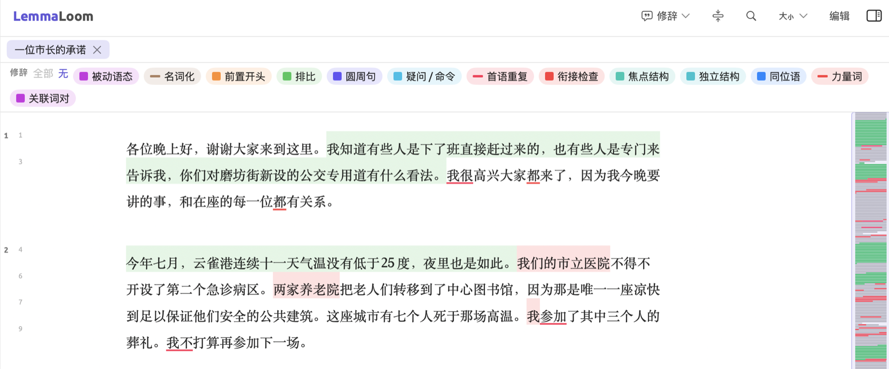
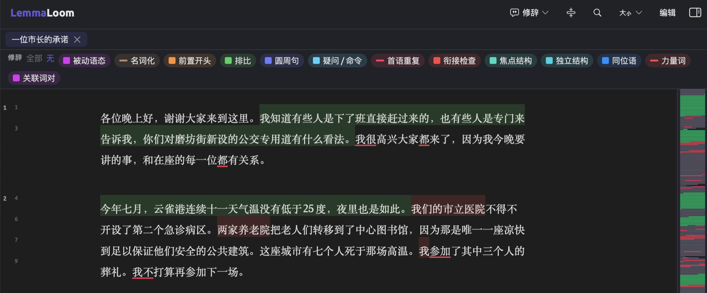
下表按检验顺序列出各种手法：
| 标注项 | 标注的内容 |
|---|---|
| 被动语态 | 被动动词词组，如 the schools were closed（学校被关闭了） |
| 名词化 | 由动词或形容词变来的名词。在英语中，指以 -tion、-sion、-ment、-ness、-ity、-ance、-ence 或 -ism 结尾、长度在七个字母以上的名词（decision、payment）；在德语中，指以 -ung、-heit、-keit 等结尾的名词 |
| 前置开头 | 句首位于主语之前的成分，如状语或分词短语（After the flood, the council…） |
| 排比 | 三个或更多并列的成分，或两个各有主语的并列小句（we marched and they watched） |
| 圆周句 | 至少有 12 个词，且至少 55% 的词位于主要动词之前的句子（在 20 个词的句子中，主要动词之前至少要有 11 个词）。在德语中，指中场在右句框收拢之前容纳了 8 个或更多词的句子 |
| 疑问 / 命令 | 整个疑问句或祈使句 |
| 焦点结构 | 为突出某个成分而改换结构的句子，如 there is…、what we need is… 和 it was the farmers who… |
| 独立结构 | 带有分词、游离于小句之外的名词（the vote taken, we went home） |
| 同位语 | 换一种说法指称旁边那个名词短语的名词短语 |
| 力量词 | 最高级、经过加强的形容词或副词（extremely hot），或 only、never、even 这样起强调作用的副词 |
| 关联词对 | 成对的连词，如 both … and、either … or 和 neither … nor |
| 衔接检查 | 六个词以上、被衔接透镜算作新话题的句子的主位 |
| 首语重复 | 以同一个词开头的连续句子的前两个词，开头词为 the、a、an、and、but、so 和 then 的除外。这是一种修辞格，与衔接中的零形回指无关。 |
每个词只显示表中的一种修辞手法，即按表中顺序第一个适用于它的那一种。疑问 / 命令作用于整个句子，圆周句作用于句子主要动词之前的所有内容，所以这两种手法优先于表中排在后面的其他手法。我和我们这样的第一人称代词也算作开头词，所以在“我们为什么封路”中，首语重复会标注许多句子的开头。
大多数检验在德语和中文中有各自的版本。例如在德语中，前置开头标注不含主语的前场；在中文中，它高亮前置的话题。独立结构只在英语文档中检测，圆周句在英语和德语文档中检测。所有手法的图例项，包括这两种，都会显示在每个文档的图例中。
检查器语法标签页中语篇分面的修辞部分，列出找到的所有修辞手法，并简要说明标注的原因。这份列表也包括正文中看不到的发现，即标注项已停用的那些，以及所在的词已显示表中更靠前手法的那些（见第 11 章“语法检查器”中的修辞）。
编码与书签
编码以每个编码自己的格式和颜色显示文档中所有已编码的段落（创建或编辑编码时，在格式中选取高亮、下划线或方框；见第 7 章“编码”中的编码的字段）。它还会在文本左侧的页边栏中，在每个编码实例旁边画一条彩色竖条。停用编码后，这些都会隐藏。编码时请让编码保持启用。编码完成后，如果阅读文本时不想看到编码实例，就停用编码。
书签以书签的颜色高亮每个加了书签的段落，并在页边栏和文档概览中显示这个书签。只要启用了这个透镜，就会这样显示。
无论启用了哪些透镜，备忘录和链接都会显示，就像启用编码时的编码实例一样。
词典透镜
词典以各自的名称出现在透镜菜单的标注组中。词典透镜以每个类别指定的颜色高亮该类别的词条，它的图例中每个类别各有一个图例项。“气候辩论”项目有一个词典“模糊限制语”，其中有近似语和缓和语两个类别。启用“模糊限制语”后，图例中会有这两个图例项。以“电台辩论”中的“在我看来，这个负担似乎落在了几乎每一个人身上”为例，似乎作为缓和语高亮，几乎作为近似语高亮。如果你的研究对某些词语有自己的分类（例如模糊限制语、归咎于人的说法，或者某个政策领域的术语），词典透镜就很有用。
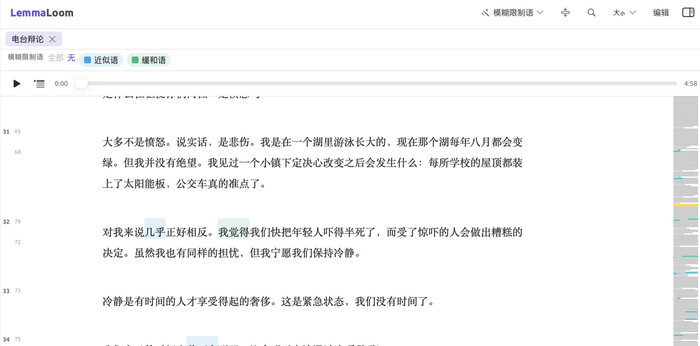
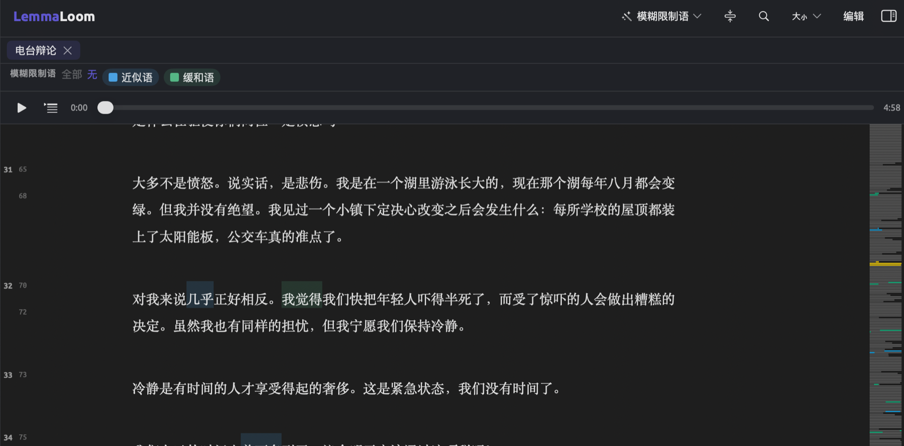
词典按完整的词匹配词条，不区分大小写和重音符号，但中文词条只要在文本中出现就能匹配（见第 19 章“词典”中的词条如何匹配）。每种词形都必须作为单独的词条输入。例如，如果希望英文的 model 和 models 都能匹配，就要把两者分别添加为词条。词典匹配不考虑词在句中的语法和用法。“科学从无定论”中有一句“它也会让一个退休教师在公开场合说一句‘我说不准’”，这里的说不准只是被引用的一句话，作者并没有用它缓和自己的论断，但它仍作为缓和语高亮。启用透镜后，图例会立即出现，高亮则要等词条匹配完成后才显示。透镜启用期间编辑词典，标注会随之更新。
元话语中模糊限制语的词表是预先定好的，而词典收录的是你自己定义的词条和分类。如果要加上词性之类的规则，可以使用查询透镜。
查询透镜
任何在文本中查找段落的查询，都可以存储为查询透镜。打开存储菜单（查询横栏中带向下箭头的方框），然后点按存储为透镜…（见第 18 章“使用查询结果”中的把查询存储为透镜）。“气候辩论”项目有一个已存储的查询透镜“紧迫性话题”，它高亮含有紧迫、危机、紧急或期限且与带有编码“紧迫性”的段落重叠的句子。如果你的问题需要组合多个规则，例如把词语与它的语法特征结合起来，或者把编码实例与词语结合起来，查询透镜就很合适。哪些文档提供某个查询透镜，取决于存储查询时在可用范围中的选择：
- 为所有项目或项目存储的查询，出现在项目的每个文档中；
- 为文档集存储的查询，出现在该文档集的文档及其译文中；
- 为文档存储的查询，只出现在那个文档中。
“紧迫性话题”是为项目存储的，所以“气候辩论”项目的每个文档都可以用它来标注。
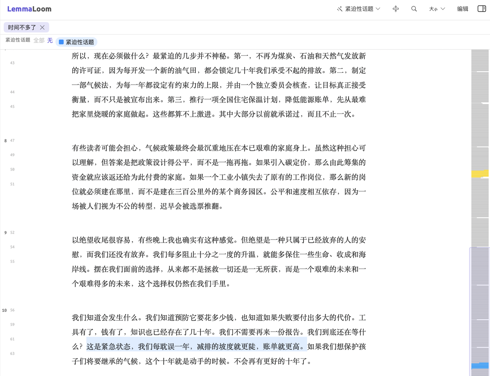
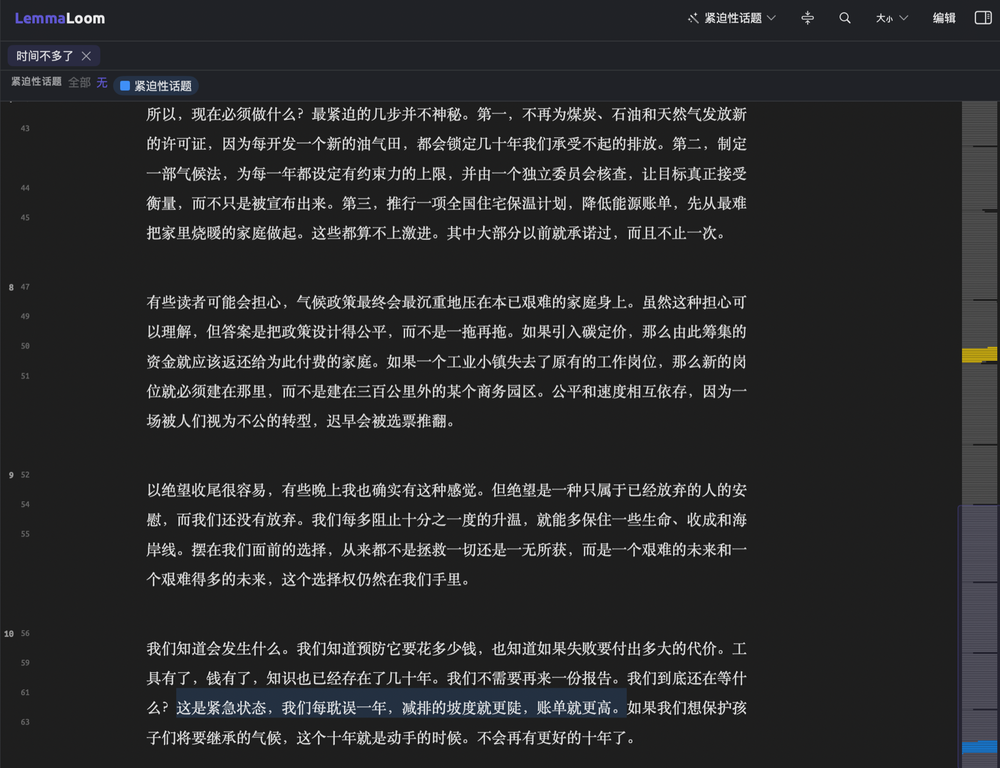
查询透镜标注它所属查询的命中结果。查询没有类别时，透镜的图例只有一个以查询命名的图例项，所有命中结果都以高亮显示。查询有类别时，每个类别是一个标注项，有自己的颜色和样式（高亮或下划线，在查询的类别条件中设定）。使用着色依据时，命中结果中的每个不同取值各成为一个标注项，总共最多十六个。前八个取值以高亮显示，后八个以同样的八种颜色加下划线（见第 15 章“构建查询”中的类别与着色依据）。查询透镜的图例项一律显示方块。
文档中的编码实例或书签发生变化时，查询透镜会重新运行，所以查找已编码段落的查询会随着你的编码保持最新。要把查询透镜从透镜菜单中移除，请打开查询的存储菜单，然后点按移除透镜。查询要成为透镜所需满足的条件，见第 18 章“使用查询结果”中的哪些查询可以成为透镜。
分析器透镜
你在窗口 ▸ 分析器中定义的分析器会找出文本片段，并为它们指定键。分析器图例中的键决定它的透镜有哪些标注项。你的所有分析器都以各自的名称列在透镜菜单的第二组中，并且只出现在分析器能处理其语言的文档中。只有被指定了分析器图例中某个键的片段才会显示在透镜中，其颜色和样式（高亮、下划线、文本颜色或粗体）按图例中那个键的定义显示。如果你要在各个文档中反复寻找某种模式，而现有的透镜、词典和查询都无法捕捉它，就需要编写分析器。
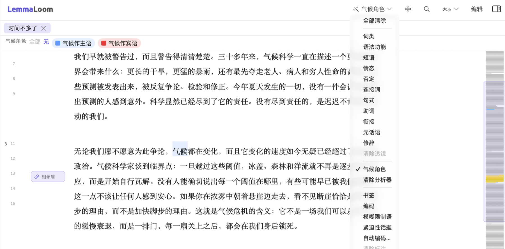
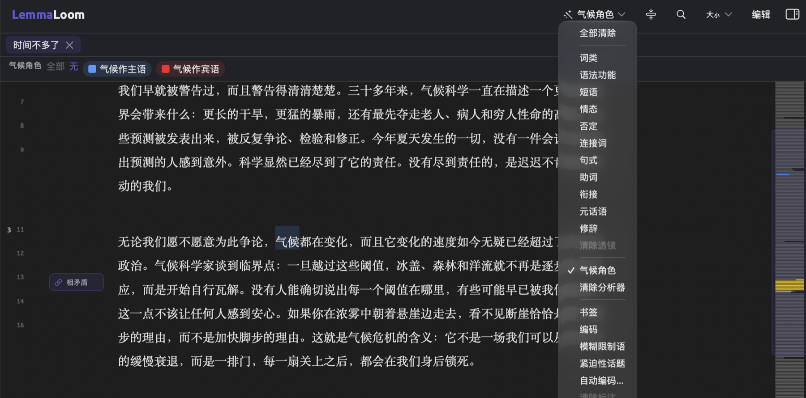
如果为某个文档跳过一个分析器，或者在文档信息中移除它的输出，它的透镜就会从这个文档的透镜菜单中消失（见第 20 章“自定义分析器”中的按文档设置分析器）。关于怎样编写分析器以及分析器何时运行，详见第 20 章“自定义分析器”。
透镜的颜色与样式
有四个透镜（词类、语法功能、短语和形态学）的颜色和样式可以自定义。无论你查看的是哪个项目中的哪个文档，你的自定义设置都会影响这些透镜的外观。其他内置透镜的颜色是预设的。词典、查询和分析器生成的透镜，颜色取决于它们的类别和键。如果两个标注项在你看来难以分辨，或者你要叠加的透镜超出了默认样式所能容纳的数量，就可以调整颜色。
每个标注项可以显示为以下四种样式之一：
| 样式 | 词的外观 |
|---|---|
| 高亮 | 词的后面衬一条浅色色带 |
| 下划线 | 词的下面有一条彩色线 |
| 文本颜色 | 文字显示为该颜色 |
| 粗体 | 文字显示为粗体，并带有该颜色 |
词类和语法功能透镜默认使用下划线，短语和形态学透镜则默认使用高亮。
下图显示设置窗口的透镜面板，词类和语法功能透镜的每个标注项各占一行，都设为下划线。
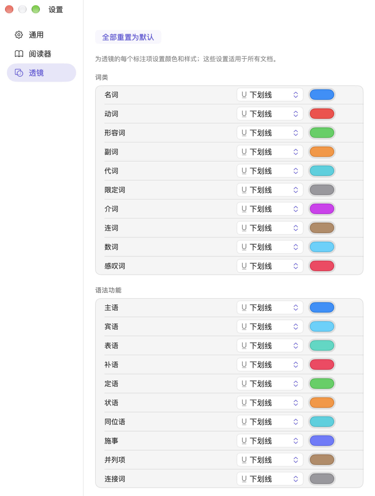
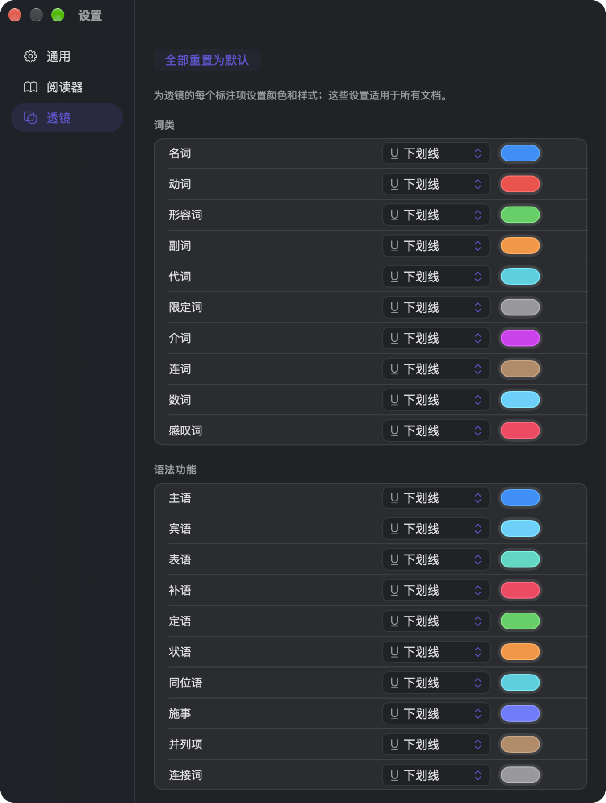
更改一个标注项的外观：
- 选取 LemmaLoom ▸ 设置…（⌘,），然后点按透镜。
- 找到这个透镜所在的部分和这个标注项所在的行，例如词类下的名词。
- 从这一行的菜单中选取一种样式。菜单显示当前的样式，例如下划线。
- 点按旁边的颜色池，然后选取一种颜色。
更改会立即反映在已打开的文档中。在帮助 ▸ 术语表中，代表某个标注项的标记和术语（例如代表名词的 NN）按这个标注项的颜色和样式设置显示。图例中的图例项显示的是标注项的默认颜色和形状，因此更改之后，图例项与它在文本中所标注的词看起来会不一样。每个更改过的标注项都会有一个重置按钮，显示在这一行的末尾，形状是一个弯箭头，悬停提示如重置 名词。点按它可以把这个标注项恢复为默认设置。面板最上方的全部重置为默认按钮会同时重置全部四个透镜的所有标注项（见第 24 章“设置与外观”中的透镜面板）。